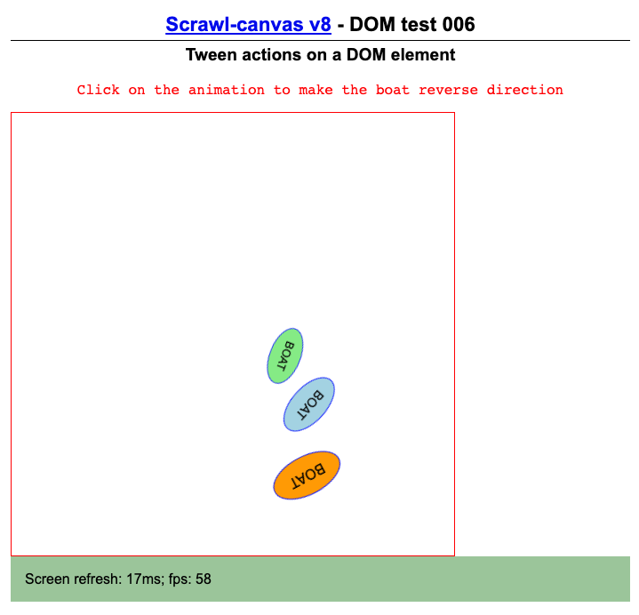
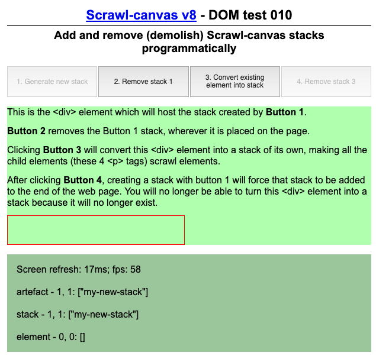
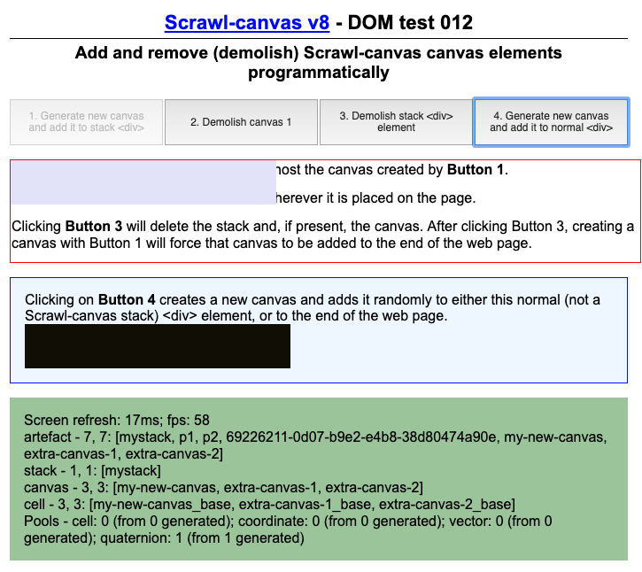
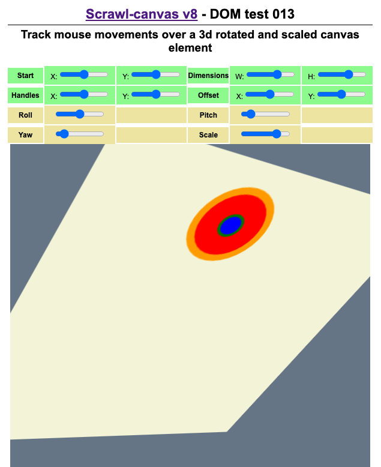

DOM 001 - Loading the scrawl-canvas library using a script tag in the HTML code

DOM 002 - Element mouse, pivot and mimic functionality

DOM 003 - Dynamically create and clone Element artefacts; drag and drop elements around a Stack

DOM 004 - Limitless rockets (clone and destroy elements, tweens, tickers)

DOM 005 - DOM tween stress test

DOM 006 - Tween actions on a DOM element; tracking tween and ticker activity (analytics)

DOM 007 - Animate a DOM element using the delta attribute object; dynamically change classes on a DOM element

DOM 008 - 3d animated cube

DOM 009 - Stop and restart the main animation loop; add and remove event listener; retrieve all artefacts at a given coordinate

DOM 010 - Add and remove (demolish) Scrawl-canvas stack elements programmatically

DOM 011 - Canvas controller 'fit' attribute; Cell positioning (mouse)

DOM 012 - Add and remove (demolish) Scrawl-canvas canvas elements programmatically

DOM-013 - Artefact collision detection - DOM artefacts